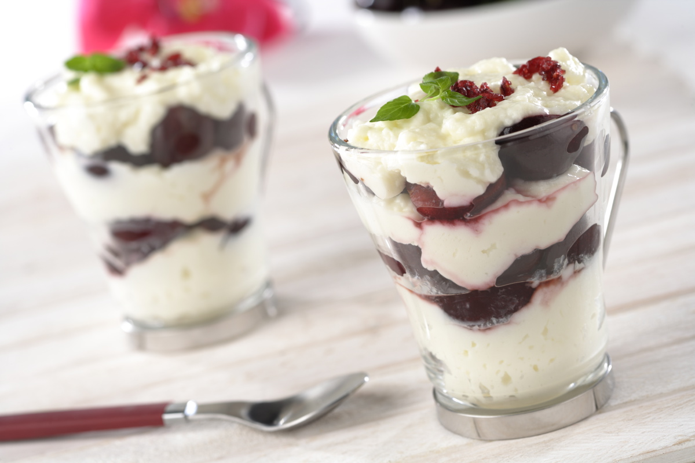
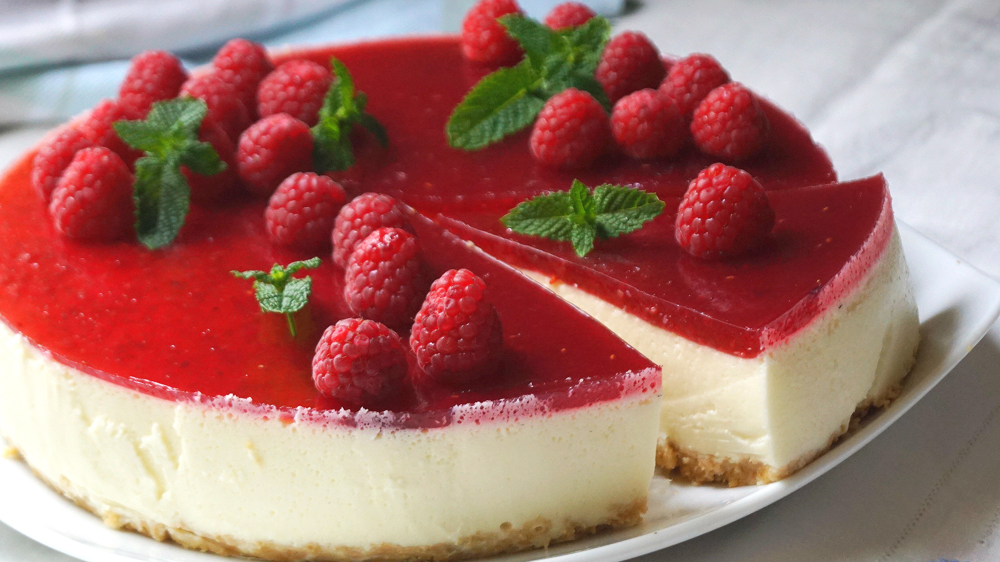
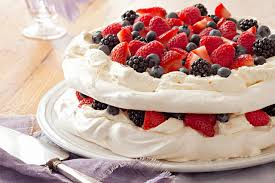
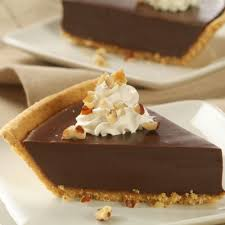
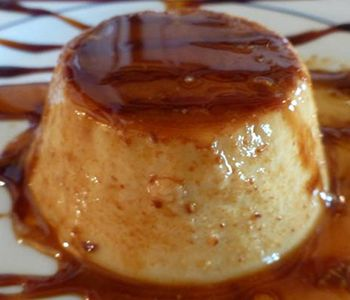
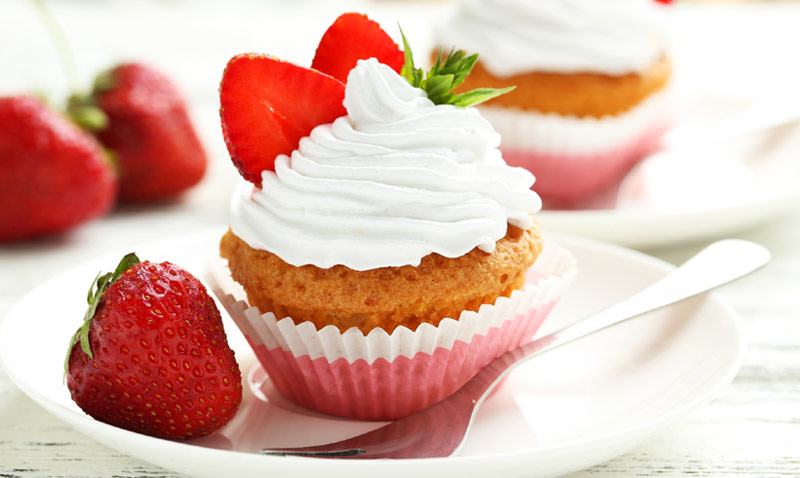

Dulces Suspiros
el sabor de la vida






Historial:
- Postres Chinos
- Postres con caramelo
- Postres Frutales
- Postres con chocolate
- Postres con dulce de leche Argentino
Budin de pan
Creado el: 22/04/2018

Ingredientes: 600 gr. Pan, 250 gr. Azúcar, litro leche, 4 Huevos, 1 cda. esencia de vainilla, 300 gr. Azúcar para el caramelo, 150 gr. Pasas de uva (opcional)
Pasos:
- Preparar el caramelo y volcarlo en una budinera. Reservar.
- Calentar la leche con el azúcar y volcarlo sobre el pan cortados en cubos pequeños.
- Batir ligeramente los huevos y agregarlos a la mezcla con la esencia de vainilla. Luego agregar las pasas de uva.
- Verter la preparación en el molde acaramelado (en éste caso yo lo hice en dos moldes de 20 cm. Si queres podes hacer la mitad de la receta.)
- Llevar a horno de 180 grados por 45' aproximadamente, a baño Maria
- Dejar enfriar por unos minutos, luego desmoldar.
- Lo podes servir solo o acompañado con una porción de crema Chantilly.
Deje un comentario:

Nachito Geno:
A mi me gusta la papafrita...

Lucas Triggiano:
Ami me salio muy seco, por eso se lo di al perro...

Fran Fernandez:
Ami me dejo re loco pero creo que se me callo algo...
Tiramisu
Creado el: 23/04/2018

Ingredientes: Clara de huevo 2, Yema de huevo 4, Azúcar 100g, Queso mascarpone 400g, Bizcochos de soletilla 200g, Café 175ml, Chocolate negro rallado 200g, Cacao en polvo
Pasos:
- En primer lugar, preparamos una cafetera de café bien fuerte y lo dejamos enfriar. Después, montamos las claras a punto de nieve y las reservamos. En otro recipiente grande batimos las yemas con el azúcar hasta que tenga una consistencia espumosa.
- En este momento añadimos el mascarpone poco a poco y seguimos batiendo a poca velocidad. Incorporamos las claras montadas y mezclamos con una espátula realizando movimientos envolventes
- En un molde rectangular, ponemos una capa de bizcochos de soletilla empapados en el café. Los cubrimos con una capa de crema de mascarpone y encima espolvoreamos la mitad del chocolate rallado.
- Repetimos la operación: capa de bizcochos con café, capa de crema de mascarpone y capa de chocolate rallado. Por último espolvoreamos con cacao en polvo y guardamos en la nevera un mínimo de tres horas, mejor toda la noche, para que la mezcla coja cuerpo.
Deje un comentario:

Miguel Trigiano:
Increible postre muy recomendable...